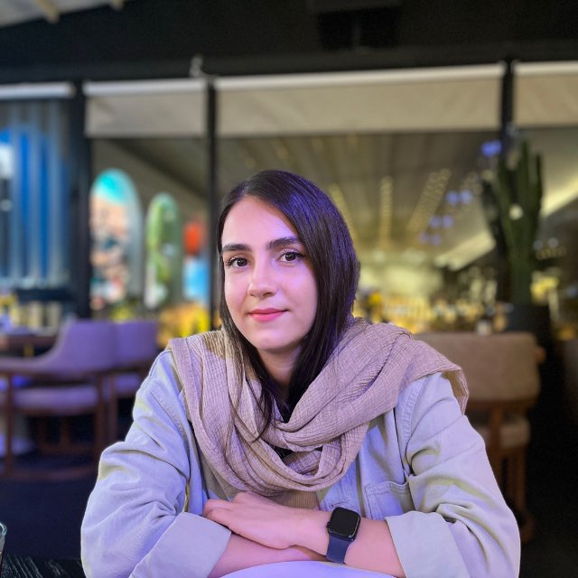

8+ yearsBuilding production backend systems
BACKEND ENGINEER
I build reliable systems for real-world products.
Backend engineer with 8+ years of experience across financial products, investment platforms, cloud infrastructure and social systems — specializing in Go, microservices and distributed architecture.

8+Years Experience
Building better systems,
one thoughtful decision at a time.
6K+ peak RPSHandled in high-traffic campaigns
Go · MicroservicesDistributed systems & backend architecture
ABOUT ME
More than just code.
I enjoy turning complex backend problems into reliable systems that people can actually use. My work has moved through financial services, cloud infrastructure and social products, while my curiosity keeps pulling me toward AI-powered products and new ways of solving real problems.
Outside work, I like travel, hard new challenges, learning about human behavior and better soft skills, finding good coffee, and keeping sports as part of my routine.
EXPERIENCE
My professional
My professional
journey.
From blockchain experimentation to cloud infrastructure, financial systems and high-throughput Go services.
10/2025 — Present
Software Engineer (Go)
Saraf · Investment platform
Migrating PHP monolith capabilities to Go microservices with gRPC, Hexagonal Architecture and NATS. Built and operated two campaigns reaching ~6,000 RPS.
05/2024 — 11/2025
Backend Developer (Go)
OzoneEcosystem · Ozone Card & Ozone Social
Built financial microservices and rewrote PHP services in Go; worked on distributed chat, quests and event-driven social features.
04/2023 — 05/2024
Backend Team Lead
Asiatech Cloud · IaaS & CDN
Led and mentored 3+ engineers, owned technical decisions and introduced Agile practices that improved delivery time by 20%.
02/2022 — 04/2023
Backend Developer (PHP, Go)
Asiatech Cloud
Built IaaS capabilities around IPs, firewalls, server queues, backups, virtualization, billing and wallet services for 7,000+ active users.
07/2020 — 02/2022
Backend Developer
IdeBekr Mobin
Developed and optimized custom software modules for organizations, universities and e-commerce products.
12/2019 — 07/2020
Backend Developer
Tearaz ATM
Developed bank communication APIs and software licensing APIs for ATM devices.
09/2018 — 08/2019
Backend & Blockchain Intern
ABC
Contributed to a blockchain-based internet taxi product as a backend and blockchain intern.
SKILLS
Tools I use to turn ideas into systems.
GoPHPPostgreSQLMySQLRedisMongoDB
KubernetesDockerMicroservicesHexagonal ArchitectureDDD
Event-Driven ArchitecturegRPCNATSRabbitMQCI/CDSystem Design
BUILD
Systems that stay useful
when the traffic gets real.
when the traffic gets real.
MY APPROACH
Reliable software starts with clear thinking.
I care about maintainability, clear boundaries, collaboration and resilient architecture — and I like exploring how AI can help create more useful, human-centered products.
GET IN TOUCH
Let's build something
Let's build something
meaningful.
Open to interesting engineering conversations, opportunities and ambitious product ideas.
Email me ↗